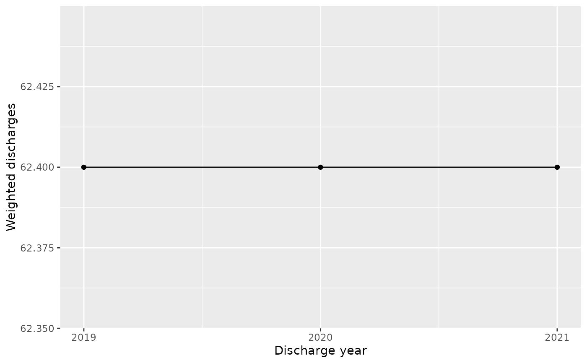

Estimate a weighted discharge total and design-based standard error for
each complete calendar year. Supply the annual sample and use cohort to
define the analysis domain. The calculation uses the original discharge
weights and year-specific hospital and stratum identifiers.
Usage
nis_annual_totals(
.data,
cohort,
coding = c("single_era", "verified_comparable")
)Arguments
- .data
A data frame or lazy DuckDB query with the standard NIS design fields and
DQTR(quarter numbers orQ1–Q4labels). All four quarters must have valid design records in each year. This coverage check cannot verify that the sample is complete.- cohort
Logical expression defining the domain. Only discharges with
TRUEmembership contribute, as innis_design().- coding
Use
"single_era"to require years within 2012–2014 or 2016 onward. Use"verified_comparable"to acknowledge the transition and confirm that the definition is coding-independent or an audit found no coding discontinuity between 2015 Q3 and Q4. A 2015 cohort confined to one coding era or with unknown discharge quarters is rejected.
Value
A tibble ordered by YEAR, with discharges, discharges_se,
unweighted n, and distinct contributing hospitals. Years without
valid cohort discharges have zero support counts and missing estimates
and standard errors. Use the support counts with nis_suppress() before
sharing annual estimates.
See also
Estimate trends across NIS years, NIS output gallery.
Other survey-design:
nis_design(),
nis_design_report(),
nis_reweight(),
nis_survey()
Examples
nis <- nis_open(nis_example(years = 2019:2021)) |>
nis_flag_dx(heart_failure = "I50")
annual <- nis_annual_totals(nis, cohort = AGE >= 18 & heart_failure)
annual
#> # A tibble: 3 × 5
#> YEAR discharges discharges_se n hospitals
#> <int> <dbl> <dbl> <int> <int>
#> 1 2019 62.4 12.3 54 9
#> 2 2020 62.4 12.3 54 9
#> 3 2021 62.4 12.3 54 9
if (requireNamespace("ggplot2", quietly = TRUE)) {
ggplot2::ggplot(annual, ggplot2::aes(YEAR, discharges)) +
ggplot2::geom_line() +
ggplot2::geom_point() +
ggplot2::scale_x_continuous(breaks = annual$YEAR) +
ggplot2::labs(x = "Discharge year", y = "Weighted discharges")
}
